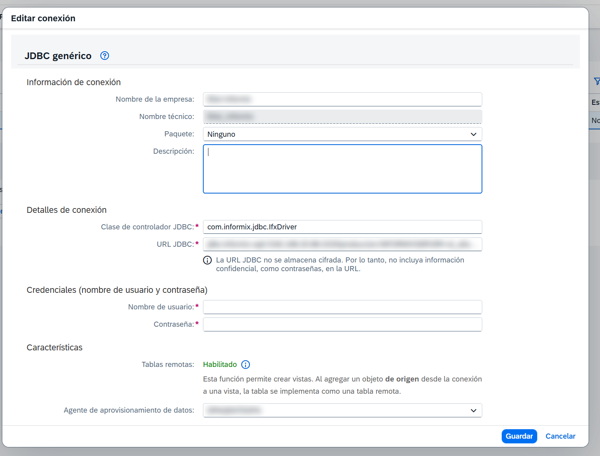

Por qué no hay un conector de Informix
Informix (IBM / HCL) no tiene un conector nativo en SAP Datasphere. La conexión se hace con el tipo Generic JDBC, que no corre en la nube: se ejecuta sobre el adaptador CamelJdbcAdapter del Data Provisioning Agent (DP Agent), un componente que se instala on-premise, del lado de usted.
Eso cambia el orden de las cosas. Antes de tocar Datasphere hay que tener un servidor con el DP Agent instalado, con red hacia el servidor Informix y con el driver JDBC de Informix copiado a mano. Mientras no haya un agente seleccionado, la función Tablas remotas de la conexión aparece como Deshabilitado — y ese es el síntoma que hace creer que la conexión quedó mal, cuando en realidad falta el agente.
Lo que hay que pedir antes de empezar
Casi todo el tiempo perdido en este tipo de conexión es tiempo esperando un dato que nadie pidió a tiempo. Vale la pena pedir todo de una vez:
| A quién | Qué |
|---|---|
| Admin de Informix | Host/IP y puerto del listener (onsoctcp); nombre de la base de datos; nombre de la instancia INFORMIXSERVER (archivo sqlhosts); usuario de lectura (CONNECT + SELECT); locale de la base (DB_LOCALE) si hay tildes o eñes; versión de Informix. |
| Infraestructura / redes | Que el servidor del DP Agent llegue al host y puerto de Informix, con el firewall abierto. |
La prueba de red se hace desde el servidor del agente, no desde su equipo:
Test-NetConnection -ComputerName <IPInformixDatabase> -Port <PortDB>Debe devolver TcpTestSucceeded : True. Si eso falla, no siga: todo lo demás va a fallar después y con mensajes mucho menos claros.
El driver JDBC y la dependencia que nadie menciona
SAP no entrega el driver. Hay que bajarlo de IBM/HCL o de Maven Central. Y aquí está el detalle que cuesta una tarde: los drivers 4.50.x dependen de la librería bson (la de MongoDB), que tiene su propia numeración. No existe un "bson 4.50". La versión que declaran los drivers 4.50 es bson 3.8.0.
| Archivo | Dónde descargarlo |
|---|---|
jdbc-4.50.x.jar(driver Informix) |
Maven Central: com.ibm.informix:jdbc. Alternativas: $INFORMIXDIR/jdbc/lib/ifxjdbc.jar en el servidor Informix, o el portal de descargas de HCL. |
bson-3.8.0.jar(dependencia) |
Maven Central: org.mongodb:bson:3.8.0 |
En la página del driver en mvnrepository, la sección Compile Dependencies muestra la versión exacta de bson que pide esa versión del driver. Si falta el bson, el error típico es ClassNotFoundException: org.bson.BSONObject.
Preparar el DP Agent
- Instalar el DP Agent y registrarlo en Datasphere: Configuración del sistema → Integración de datos → Agentes on-premise.
- En
<DPAgent_root>/camel/adapters.xml, verificar la entrada<Adapter type="CamelJdbcAdapter" ...>. La documentación de SDI indica descomentarla; en versiones recientes del agente ya viene activa. Debe existir una sola entrada, sin bloques viejos ni duplicados. - Copiar
jdbc-4.50.x.jarybson-3.8.0.jaren<DPAgent_root>/camel/lib/. En Windows la raíz suele serC:\usr\sap\dataprovagent\; en Linux,/usr/sap/dataprovagent/. - Reiniciar el DP Agent.
- En Datasphere, sobre el agente, habilitar
CamelJdbcAdaptery confirmar que el agente queda Conectado. Si se modificóadapters.xml, deshabilitar y volver a habilitar el adaptador para reregistrarlo.
La carpeta debe quedar así:
camel/lib/
|-- jdbc-4.50.x.jar
`-- bson-3.8.0.jarCrear la conexión en Datasphere
En el espacio: Conexiones → Crear → Generic JDBC (JDBC genérico).
| Campo | Valor |
|---|---|
| Clase de controlador JDBC | com.informix.jdbc.IfxDriver |
| URL JDBC | jdbc:informix-sqli://<host>:<puerto>/<base_datos>:INFORMIXSERVER=<instancia> |
| Nombre de usuario / Contraseña | Usuario de lectura entregado por el admin de Informix |
| Agente de aprovisionamiento de datos | El DP Agent donde se habilitó CamelJdbcAdapter |
| Nombre de la empresa / técnico | Nombre libre que identifique la conexión |
Un ejemplo con valores ficticios:
jdbc:informix-sqli://10.0.0.25:9088/mi_base:INFORMIXSERVER=ol_informix1Cuatro reglas sobre esa URL que conviene tener presentes:
INFORMIXSERVERes obligatorio y es el nombre de la instancia (el desqlhosts), no el hostname. Es la confusión más común.- Los parámetros opcionales van separados por
;— por ejemploDB_LOCALEyCLIENT_LOCALE.DELIMIDENT=Yconviene ponerlo siempre: sin él la tabla remota se crea pero no devuelve datos (ver más abajo). - No incluya la contraseña en la URL. Datasphere no la almacena cifrada.
- La clase del driver se puede confirmar abriendo el jar como
.zipy mirandoMETA-INF/services/java.sql.Driver.

La tabla remota se crea pero no muestra los datos
Con la conexión ya validada y la tabla remota desplegada, la vista previa de los datos puede fallar con este mensaje:
Error interno: Falló la ejecución de DPAdapterResultSet::Fetch:CamelNo es red ni permisos: la conexión ya sirvió para leer el catálogo y crear la tabla remota. Lo que falla es el fetch de las filas. Datasphere genera el SQL con los nombres de tabla y de columna entre comillas dobles, y el driver de Informix solo interpreta las comillas dobles como identificadores delimitados cuando la sesión abre con DELIMIDENT=Y. Por defecto el parámetro va en N, así que esas comillas se leen como literales de texto y la consulta se cae del lado de Informix.
La solución es agregar ese parámetro al final de la URL JDBC de la conexión:
jdbc:informix-sqli://<host>:<puerto>/<base>:INFORMIXSERVER=<servidor>;DELIMIDENT=YSobre el ejemplo anterior:
jdbc:informix-sqli://10.0.0.25:9088/mi_base:INFORMIXSERVER=ol_informix1;DELIMIDENT=YConviene dejar DELIMIDENT=Y desde el primer momento, antes de crear tablas remotas: el error no aparece al validar la conexión ni al importar el catálogo, solo al leer los datos, y para entonces ya parece un problema de otra cosa. Después de editar la URL, guarde la conexión y vuelva a probar la vista previa; si la tabla remota sigue fallando, elimínela y vuelva a desplegarla.
Cuando falla: leer los logs del agente
Los logs del agente están en <DPAgent_root>/log/ — sobre todo framework.trc y framework_alert.trc. Para más detalle, se sube el nivel de trazas a ALL (KBA 2496051).
| Error en framework.trc | Causa probable / acción |
|---|---|
DPAdapterResultSet::Fetch:Camel(al ver los datos de una tabla remota) |
Falta DELIMIDENT=Y al final de la URL JDBC. Ver La tabla remota se crea pero no muestra los datos. |
Cannot create JDBC driver of class '' for connect URL '' |
La clase y la URL llegan vacías al adaptador: la definición del CamelJdbcAdapter no coincide con la que espera Datasphere. Revisar adapters.xml (una sola entrada), reiniciar, reregistrar el adaptador y volver a crear la conexión. Verificar la versión mínima del DP Agent. |
Cannot load JDBC driver class 'com.informix.jdbc.IfxDriver' |
El jar no está en camel/lib, o el agente no se reinició. |
ClassNotFoundException: org.bson.BSONObject |
Falta bson-3.8.0.jar en camel/lib. |
Connection refused / timeout, o error de INFORMIXSERVER |
Red o firewall, puerto equivocado, o nombre de instancia incorrecto en la URL. |
Hasta dónde llega esta conexión
Generic JDBC soporta tablas remotas: federación y snapshot o replicación programada desde la tabla remota. No soporta replicación en tiempo real, flujos de datos ni flujos de replicación.
Para volúmenes grandes conviene preferir snapshots programados en lugar de consultas federadas.
Dicho de otro modo: sirve muy bien para traer maestros y tablas transaccionales a un ritmo definido, y no sirve para un caso que exija latencia de segundos. Vale la pena dejarlo claro con el negocio antes de montar la conexión, no después.
Fuentes
- SAP Help — SAP HANA Smart Data Integration: configuración del Camel JDBC Adapter en el DP Agent.
- SAP Blog — Data Provisioning using OracleLogReaderAdapter and CamelJDBCAdapter: descomentar
CamelJdbcAdapterenadapters.xmly copiar el jar acamel/lib. - Driver Informix JDBC en Maven Central.
- BSON 3.8.0 en Maven Central.
- POM del driver 4.50.10, donde se ve declarada la dependencia bson 3.8.0.
- IBM — What's new in Informix JDBC Driver 4.50.
- DbVisualizer — ClassNotFoundException org.bson.BSONObject.
Descargar esta guía en PDF — misma información, en formato imprimible.
¿Te sirvió este artículo?
¡Gracias! Tu me gusta quedó registrado.